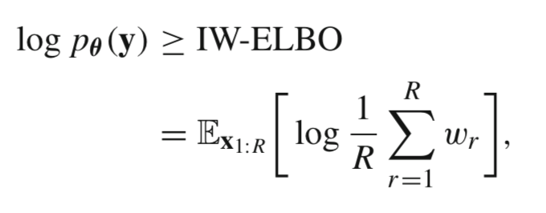
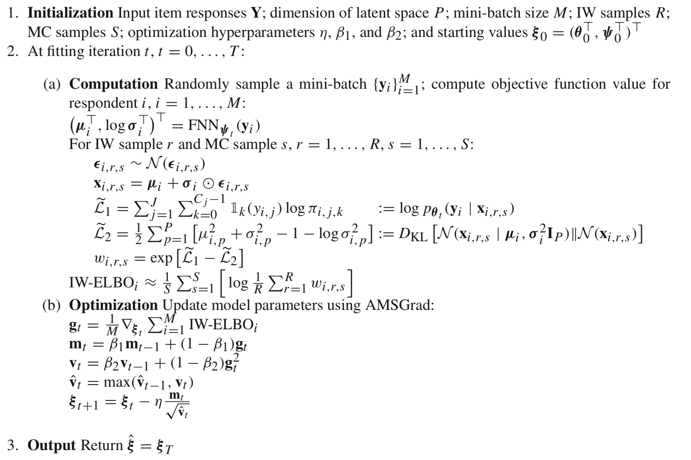
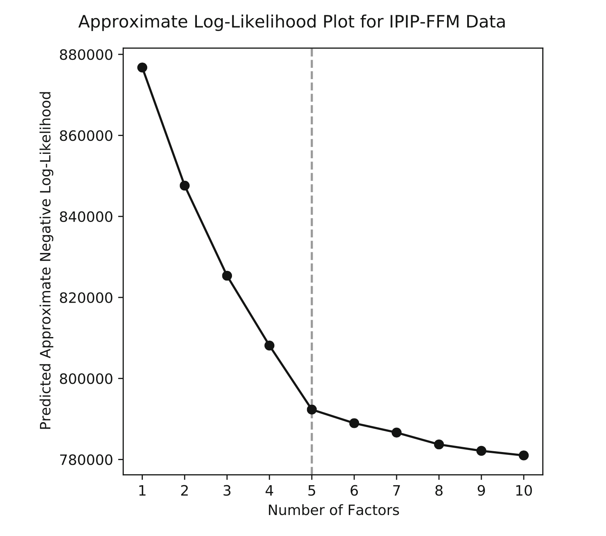

A Deep Learning Algorithm For High-Dimensional Exploratory Item Factor Analysis
Authors: Christorpher J. Urban and Daniel J. Bauer
Presented By
Jihong Zhang
Educational Measurement and Statistics
Outline
Background Information
Research Objective
Procedure of the proposed method
Numerical Example
Simulation Study
Extention of the proposed method
Background Information
Amortized Variational Inference (AVI)
Popular marginal maximimum likelihood-based parameter estimation methods included Metropolis-Hastings Robbins-Monro (MH-RM; Cai, 2010a; 2010b), stochastic expectation-maximization (stEM; Zhang, Chen, & Liu, 2020), limited-information approaches, and approaches ased on variational inference (VI). The constrained joiint maximum likelihood estimator (CJMLE) is another estimator which avoids for evaluating high-dimensional integrals.
Traditional variational inference (VI) fits a different approximate LV posterior for each observation, which quickly becomes computationally infeasible for large data sets (e.g., more than 10 latent factors and more than 10,000 respondents).
Amortized VI is a computationally efficient alternative to VI that uses an inference model to parameterize the approximate posterior. By sharing the parameters of the inference model across observations, AVI estimates a constant number of parameters regardless of the sample size.
The variational autoencoder (VAE) used in this study is an AVI algorithm whose inference model is an ANN. The FNN parameter ψ are now shared across observations.
The unique advantage of the proposed method is it combines the asympotic properties of MML estimator with the computational efficiency of CJMLE
Background Information
Importance-weighted Autoencoder
It is a algorithm for amortized IWVI whose inference model is a deep artifical neural network (ANN).
Amortized IWVI for IFA maxminzes a lower bound called the importance-weighted evidence lower bound (IW-ELBO).

Fig.1 importance-weighted ELBO
When R=1, the IW-ELBO reduces to the ELBO. As R -> Infinity, the IW-ELBO converges to the marginal log-likelihood. IWVI is equivalent to MML estimation when the number of importance samples R equals inifinity.
the proposed method (1): Hyperparameters
Importance-weighted Autoencoder
When the inference model of IWVI is feedward neural network (FNN), the associated IWVI algorithm is called the importance-weighted autoencoder (IWAE).

Fig2 Procedure for Exploratory Factor Analysis
the proposed method (2): Procedure
Fig.2 Procedure for the proposed method
Research Objective
To introduce the IWAE to the IFA literature and describe how it may be applied for Exploratory analysis of polytomous item response data in frequentist setting
To conduct simulation studies to investigate the finite sample behavior the IWAE and to compare IWAE to MH-RM and CJMLE.
Numerical Examples: Information
Software: PyTorch Ver. 1.1.6 without GPU Computing
Data: Big-Five Personality Questionnaire
Sample Size(N): 515,708
Test Length: 50 items
Item Type: 5-point likert scale
Number of Attributes By Design: 5
Numerical Examples: Results
Scree Plot demonstrated an "elbow" at P = 5
Hidden Layer size is 130 and the learning rate η = 0.005, and the number of IW samples R = 5, replicate the estimation 100 times
mean fitting time was 170 seconds (SD = 47 seconds)
mean RMSE for factor loadings: 0.018 (SD = 0.006)
mean RMSE for item intercepts: 0.042 (SD = 0.018)
mean RMSE for factor correlation: 0.028 (SD = 0.009)

Fig.3 Scree Plot
Simulation Studies: Settings
Data Generation: loings, intercepts, and factor correlations are rounded estimates from the previous empirical example
P = 5, J = 50, and Cj=5
Simple factor structure: cross-loings set to zero
R = 1, 5, and 25
100 reps for N = 500, 1000, 2000, and 2000 (R X N = 12 conditions)
Simulation Studies: Results
All estimates become more accurate as N increase
Factor correlations and intercepts estimates become more accurate with increasing R. Loadings are nearly unbiased as R increases.
For each R setting, parameter MSE quickly decreases toward zero with increasing N; Increasing R tends to improve factor correlation estimates more than the other two parameters
Increasing R from 1 to 5 decreases fitting time while increasing R from 5 to 25 increases fitting time.
Factor scores estimates tend to be more accurate with increasing R and N
Simulation Studies: IWVI vs. MH-RM
MH-RM's loadings and intercepts estimates are slightly more accurate when N = 10,000
Amortized IWVI produces more accurate factor correlation estimates across N setting
IWAI is much faster than MHRM: MHRM - 8 mins(N = 1000) and 21 mins (N =10,000), whereas IWVI - stay around 3 minutes regardless of N
Simulation Studies: IWVI vs. CJMLE
CJMLE estimates loadings and intercepts inaccurately in the smallest (N = 2000, J =100) setting but is more accurate than IWVI in the highest settings
IWVI is always faster than CJMLE
Extension of the proposed approach
CFA: the proposed method could be used to validate Q matrix by ensuring factor loadings are either freely estimated or set to zero
Regularized EFA: a viable alternative to factor rotation by adding a penalty function to optimization function
Approximate link function by fixing latent density